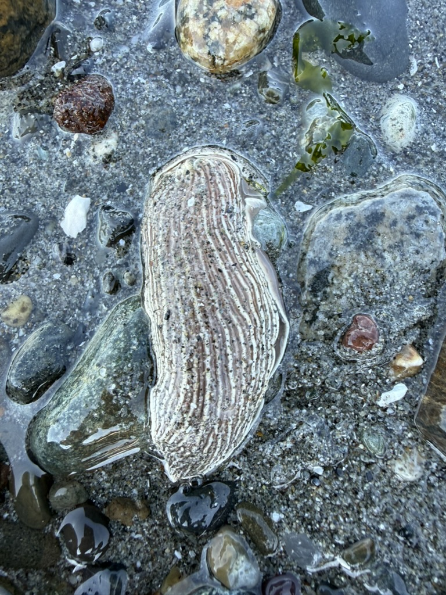
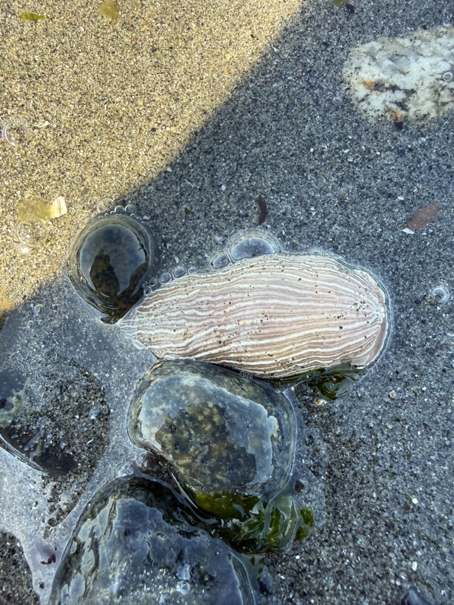

June 8, 2026 · Field Report
Striped Nudibranch spotted washed up at Golden Gardens
A species usually described as out of reach for beachgoers turned up right at our feet in the Golden Gardens tidepools.
The Striped Nudibranch, Armina californica, is one of the more dramatic-looking sea slugs on the Pacific coast: a flattened, oval body ridged with crisp white and brown longitudinal stripes. It spends its life on soft sandy and muddy bottoms, where it hunts sea pens. Because that habitat tends to sit well below the tideline, the species has a reputation for being something most people will never see in person.
The Washington Department of Ecology captures that conventional wisdom nicely in their 2019 profile of the species:
“You won’t find one on a beach walk or tidepooling session though.” Washington Department of Ecology, “The striped nudibranch: Don’t mess with this ferocious sea slug” (July 2019)
So we were genuinely surprised by what we found. On a low-tide visit to Golden Gardens on the Seattle shore of Puget Sound, we came across not one but two Striped Nudibranchs washed up among the cobbles and sand of the tidepool zone. Their striped bodies were unmistakable, even half-settled into the wet sand.


Two Striped Nudibranchs found washed up at Golden Gardens, Seattle.
So why did they wash up here?
We don't think this contradicts the biology so much as it adds a wrinkle to it. The claim that you won't run into Armina californica on a beach walk is a fair generalization. For most beaches, most of the time, it holds. But Golden Gardens may be a special case.
Golden Gardens has a broad, gently sloping foreshore of sand and mud rather than steep rock. On a strong low tide, that soft seafloor (exactly the kind of habitat Armina prefers) gets exposed much farther out and much lower than it does on a typical beach. In other words, the boundary between “deep, slug-friendly sandy bottom” and “the low intertidal zone you can actually walk to” may sit unusually close together here.
If that's right, it wouldn't take much to carry an animal from its normal habitat up into the reach of a tidepooling session: a low tide, a bit of wave action, a current nudging across the flats. The slugs we found weren't living in the tidepools; they had washed into them. But the fact that they could wash in at all suggests the Golden Gardens flats bring this species closer to shore than the usual description allows.
We're filing this as a small but real exception to the “you'll never see one” rule. If you're walking the Golden Gardens tideline at a good low tide, keep an eye on the wet sand. You might just spot a Striped Nudibranch of your own.
Field notes
Species: Striped Nudibranch, Armina californica
Location: Golden Gardens Park, Seattle, Washington (Puget Sound)
Conditions: Low tide; specimens washed up in the tidepool / low intertidal zone
Count: Two individuals